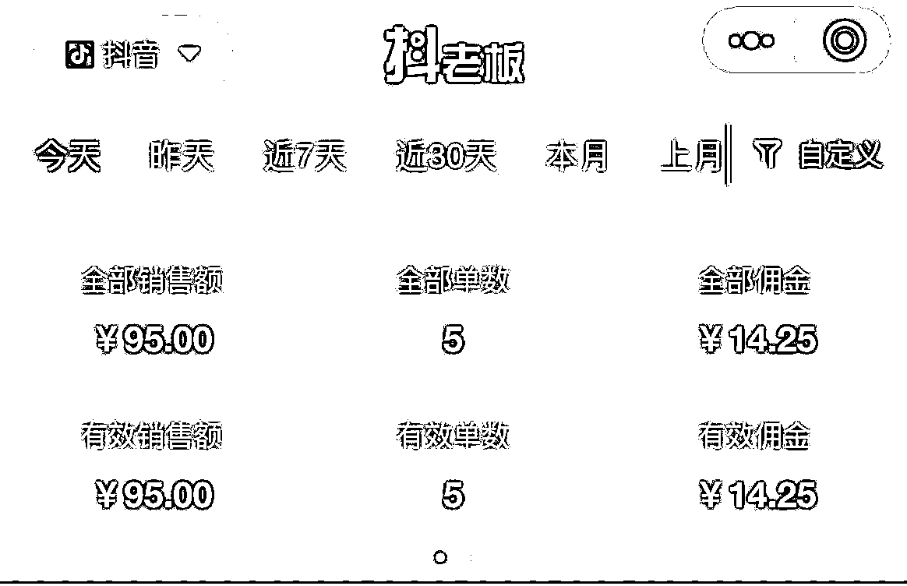

来源：https://auyrlu2gke.feishu.cn/docx/QFpVd2N7Pof208xlclccjeg3n9e
大家好，我是钱劲，加入生财两年了，这是我第一次发帖。
今天看到盗坤分享的抖音图文二创带货，刚好我也在做，虽然没拿到大结果，但算把整个流程跑通了，只要发图文视频都会出单（几百播放就能出单）所以写这篇文章，来给在找项目，想做副业的圈友打打气!
图文带货，可以直接冲！简单易上手，适合小白！！（我想刚开始做的人给新手分享经验更能增加他的信心吧？）

抖音图文现在是风口，有流量扶持，而且抖音图文投流已经在内侧了。
1、流量大，爆的几率大：抖音相比视频号、快手、小红书盘子是最大，他的投流算法精准稳定，可以投流的量很大，非常卷，但是图文玩法，是有机会给大家弯道超车的。
2、制作简单：图文相比视频制作要简单的很多，一个手机，10分钟左右就能编辑一条图文视频，制作视频的话新手随便要花个30分钟以上，而且现在传统的视频搬运，混剪套路已经在被平台打压了，图文就是一个很好的“突破口。”
3、只要选品选的好，图带带货播放几百就能出单，这是很多混剪视频做不到的。
做 图文带货，最好是准备3-5个号，前期不敢这么做，心里没底的话，也可以先准备一个账号先跑通流程，先出一单也是可以的。
挂车需要先开通橱窗，1000粉每天可以发布2条挂车图文，3000粉以上1天可以发布5条挂车图文。
如果没有1000粉，可以先涨到1000粉去挂车，至于怎么涨粉开橱窗，这里就不多说了，生财很多文章里面都有说明。
1、找同行，抖音搜#图文掘金计划，看看点赞高的图文笔记，看他卖什么东西，你会看到零售、花卉、饮料、服装、百货.....自己挑选，你看到对标账号，你去看看他主页最近发的多的品是什么？说明这个品出单效果不错。
你看我搜的，一个防晒四件套一周内自然流跑到7830多赞，这个品非常适合夏天卖~
我用的最多的就是考古家的爆品探测，可以看到实时热销商品，找到你想卖的品，你可以用表格记录下来。
以上是我找品的几个方法！！
这里我再说一下选品的一个底层逻辑，我们在选品的时候要根据市场的需求供应来选品，比如春夏秋冬天气适合卖什么？节日什么东西有需求？也可以看最近卖的好的品，有没有与他相关的产品可以卖，很多人在家里摆绿植，天气炎热，绿植容易黄，是不是可以想到绿植营养液之类的产品，这样我们可以去深度挖掘一下。
1、千万不要在一棵树上吊死，很多大佬说带货就是要多测品
2、不要选特别小众的品
3、选的品，做出来的图片一定要有视觉效果，这点可以看看小红书
如果你测出一个品，几百播放都有单，说明这个品不错，多账号可以都发这个品，一个账号的话，也可以多发，直到把这个品的流量吃完~
比如我找到的一个品，是一款拖鞋，播放几百就出了好几单，这种就可以一直发，直到流量吃完，吃透~
这个我还没爆单，我就说说我自己的感觉吧，我觉得图文爆单的核心是图片视觉，跟文案文案可以抄爆款的进行修改，也可以直接套用。
第一步：确定好你的品，你可以去小红书或者抖音或者淘宝（只要你能想得到的平台）找图片，找到图片之后保存在手机里面，使用醒图，或者美图秀秀进行处理。
图文出单效果最好的是1-3张图片，第二三张最好是拼图，4宫格拼图~
这里图片制作我直接引用生财圈友@逍遥https://t.zsxq.com/0f0tbsZWc内容吧，他这个方法跟我的差不多~！
以这个为例，我的带货图文参考对标是这样的图。
那么我会先去小红书上找到类似的图片，导入美图秀秀
然后再找一个被咬开的梨子图片，在美图秀秀里面抠图处理（这里我加一个方法苹果手机的话可以直接在相册里面长按图片抠图），然后合成到我的背景底图上，这样一个按照对标的原创的图片就生成了。


图片合成完成以后，就是按照原图的感觉去加文字以及贴纸和滤镜等，贴纸比较随意去加就好了，然后排版往边角放一下就OK了，这样一张单图的去重就完成了。


首先打开美图秀秀，点拼图。我一般都是用四张来拼图，这种拼图主要用来做一些零食，中老年的话就是汤包之类的比较多。然后导入四张图片之后点高级编辑，选中无缝模式，然后融合度，就可以拉大缩小所有图片，大家可以按照图片的哪种排版好看替换图片的位置。


调整好图片大小后位置后，我们后续要做的也是添加滤镜和贴纸还有文字，这样一张拼图的图文就完成了。


相比较于单图的话，这种拼图的图片，同质化的概率会更低。
刚开始我有两篇笔记是这样的，这种大概率是图片去重不够，我的处理方法是重新处理图片，放大，加一点贴纸，调色等等~
最后说一下
很多人想做抖音短视频带货，可做视频对很多人来说门槛有点高，就算发出去视频，得到的正反馈非常慢，我相信很做人做短视频带货，满腔热血之后都是倒在了这一步~
现在图文带货的反馈是比较快的，想做短视频的小伙伴，可以借此次机会练习下手，把这个模式跑通，别想赚多少钱，你就全身心投入进去，去做这件事，等你拿到结果之后，你会发现自己练成了一些带出单有帮助的技能，也培养出了出单的手感~对后面转型做视频带货也是有很大帮助的！！
没有执行，再好的方向和选择都是空，所以一定要去坚决的执行下去。
让我们一起加油~爆单！！！